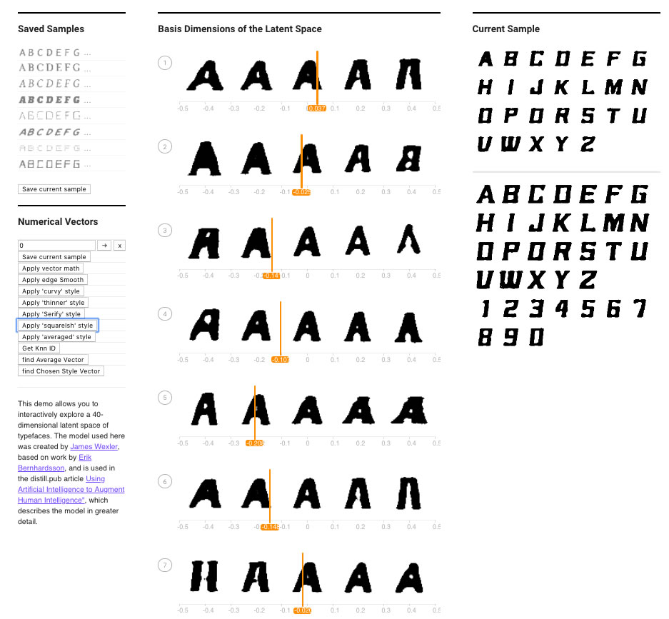

link to code VectorChooser.vue
link to code FontModel.js
Do the different digits separate into distinct clouds? Are there images that are in the wrong cloud, and can you make sense of why they are wrong? Are there images that are outliers from the rest of the data? Are there digits that seem more separate from the others, and are there pairs of digits that are more easily confused?
When running the app with T- SNE, after a considerable number of iterations 3000, it is possible to see some numbers that do match the cloud of numbers they are in. My guess is that this is directly related to the time we give to the process of arranging digit in a 3d Space and also to the distribution of nearest neighbors in the original space, a 7 can be quite similar to a 4 or a 1. This is clear when we check for the distance between the outliers and the cloud they are classified in.
When using word2vec 10k vs word2vec all , we see that the matches are bigger with Word2Vec all. Also the distance between vectors is lower in for the same words when using this data. 1.4: Finding word analogies with vector algebra The only thing that I can say about this is that it performs really well with more logic analogies such as Jagger is to Rolling_stones as Lennon is to Beatles. But with things a little more complicated and trivial such as Lemon is to citric as apple is to , one expects a similar analogy such as sweet. Instead , it returns GRAPE.
emedding projector running for 12350 iterations.
Selected Font= 1397
Selected font = 1242
Selected font = 4614
Selected font = 3208
2.3.1 - 2.3.2 Link to the code. VectorChooser.vue + Font model modified as requested in
2.3.3.a Apply Vector Math
By Applying the Vecctor proveided by Natalie through the Apply Vector Math , it gives the current font a 'bold' Effect.
“0.053,0.026,-0.060,-0.014,-0.093,-0.018,0.087,0.096,-0.039,0.071,0.111,-0.022,-0.007,0.022,-0.032,0.141,0.126,-0.015,-0.075,0.120,0.068,0.021,0.104,-0.065,-0.085,-0.018,-0.038,-0.059,-0.051,-0.056,0.154,-0.044,-0.116,0.038,-0.144,-0.103,-0.032,0.059,-0.076,-0.030”
2.3.3.b Finding and applying new styles
Find 10 fonts for a specific quality (i.e. bolding, dotting, fancy, serif...etc) and average them out to find a characteristic vector (for example, “bolding vector”). Try applying that vector to another font. Again, you can do this by manual computation and then modifying the added vector in the "Apply Vector Math" button, or you can make new buttons. Does it work better or worse than the previous one-sample method? Try this with at least 2 characteristics.
Selected fonts.
Generation of new fonts using the averaged styles
Modifier 1 - 'curvy'
Original font
By using this function , the font goes varies from sharp corners to round ones.
Modifier 2 - ''Thin modifier"
Original Font
By applying the 'Thin' Modifier, the font goes from bold to a regular or thin style
Modifier 4 - 'Serify'
Original font
This applies an enhancement of the serifs of the font (doesnt work well in all fonts)
Modifier 5 - 'Squareish'
Original font
Applying this style, it modifies the corners of the font making it more squared. This one works really well.

Modifier 6 - edge smooth.
For some reason , this happy accident increases the definition of the edges by smoothing them. Just a happy accident.
Differences are really subtle but work.
Modifier 7 - Averaged
Averaging two different styles, the modifiers actually work better thatn before.
From a squared font, to a more round one.
2.3.4 and 2.3.5
Still trying to figure them out, it's 4 am and need to get some sleep before my morning classes. Javascript is difficult for me since I never used it before (I have only experience with C# , Python and Just Java) so I spent most of the time figureing put how to write the code. This explains my really bad and messy code.
VectorChooser file